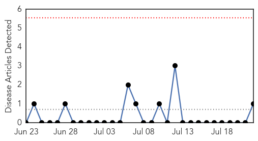
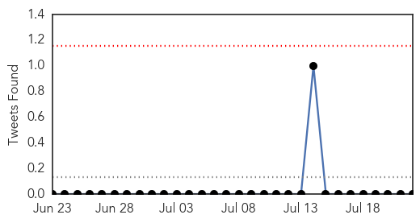
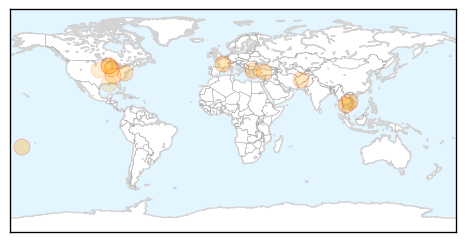
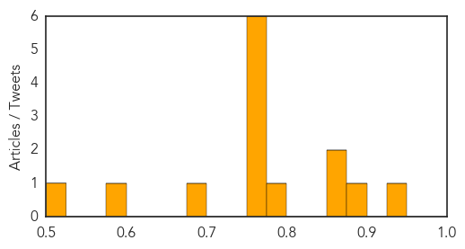

Hemmorhagic Fever
30-Day Web Trend
0 alerts, 0 warnings

30-Day Twitter Trend
0 alerts, 0 warnings

Article Locations
Article Confidences

Top Articles:
Top Tweets:
-
No tweets found for Jul 22, 2015
Influenza
30-Day Web Trend
1 alerts, 0 warnings

30-Day Twitter Trend
0 alerts, 0 warnings

Article Locations
Article Confidences
Top Articles:
- 0.942
- Rayong Hospital says two patients did not test positive for MERS
- 0.895
- Bangkok Post
- 0.871
- International Equine Disease Report, First Quarter 2015
- 0.860
- Cooks Outer Islanders Reportedly Bring Illnesses To Capital
- 0.784
- Shocking photos in state vet's report to Midwest lawmakers reveal bird flu toll to farmers & flocks
- 0.751
- July 21, 2015 Archives
- 0.751
- July 21, 2015 Archives
- 0.751
- July 21, 2015 Archives
- 0.751
- July 21, 2015 Archives
- 0.751
- July 21, 2015 Archives
- 0.751
- July 21, 2015 Archives
- 0.689
- Area clinics oppose bill letting health care workers refuse flu shots
- 0.582
- Nebraska bird flu quarantine lifted
- 0.509
- State Department of Health offers back to school vaccinations
Top Tweets:
-
No tweets found for Jul 22, 2015